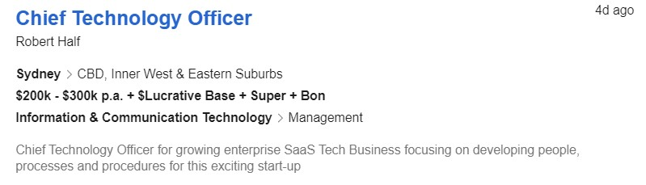

Myers-Briggs online test results.
(Truity, 2019)
The Myers-Briggs test is one of the most used psychological assesments which determines your personality type based on how you perceive the world through form of a questionair.
Hi, I’m Kris and I am an Australian from the SE suburbs of Melbourne VIC with English as my only spoken language. In 2000 I finished my VCE along with a few tafe certifications in IT, since then I have studied off and on with some vendor specific certs such as CompTIA Network+ (Teams et al., 2019) which I achieved in 2012 and have also trained online with CBTNuggets (CBT Nuggets, 2019) for the cisco CCNA, Microsoft server and exchange server but did not complete the certification track due to workload..
I have always had an interest in IT since around the age of 8 which was sparked by my first computer, the commodore amiga 64. Since then I had grown up with having computers and laptops which at the time in the 80’s and 90’s was not such a common thing unlike today. At the age of 12 I started to work on computer hardware which lead to starting my first business at 16 as a pc builder. Once I finished school I moved away from the IT world to work in the trades to which I eventually started working for a physical security company (CCTV, alarm, access control) which was heavily IP based and re sparked my interest in working with IT..
I chose to come to RMIT through Open Universities Australia as I work full time and this course allows me to study 100% online around my schedule..
I expect to learn more of the programming side to IT along with a good background in cybersecurity as this is the direction I am heading..
My ideal job would be CTO, a leadership position that looks over the big picture managing all ins and outs of the technology space which is appealing to me as I strive to reach the top position and have a passion for managing people, systems and projects on every level..
This position requires proven leadership and ability to manage large number of staff and teams as well as have a good working knowledge in software development and hands on programming skills..
Currently I have good management skills as I am the national installation, service and warehouse manger at my current job with around 5 years of experience. I have a good background in IT and software but will need to work on further skills to progress to this role. Obtaining the bachelor of IT is the first step toward this goal. Moving forward I will have to undertake further programming and management courses to back up my experience with certifications..
Click here for job listing (seek, 2019) The results of the tests below all coincide together and form a picture of my overall personality and confirm what I believe to be true about myself in that I am a natural leader and am following the correct path to further my career moving toward the goal of becoming a CTO.
Test results have shown that I will work well as both a participant in a team along with taking on a managing role within the team environment.
When forming a team I will be looking to make contact with other students by taking a proactive approach and reaching out to other people that have skillsets which would work well together.

The Myers-Briggs test is one of the most used psychological assesments which determines your personality type based on how you perceive the world through form of a questionair.
The Vark learning style test is a questionair which determines your learning preference based on four key critera, Visual, Aural, Read/Write and Kinaesthetic.
The team roles test is used to identify your key attributes and determines where you fit into team environments along with skills you bring.
I have always had an interest in IT since around the age of 8 which was sparked by my first computer, the commodore amiga 64. Since then I had grown up with having computers and laptops which at the time in the 80’s and 90’s was not such a common thing unlike today. At the age of 12 I started to work on computer hardware which lead to starting my first business at 16 as a pc builder. Once I finished school I moved away from the IT world to work in the trades to which I eventually started working for a physical security company (CCTV, alarm, access control) which was heavily IP based and re sparked my interest in working with IT..
I chose to come to RMIT through Open Universities Australia as I work full time and this course allows me to study 100% online around my schedule..
I expect to learn more of the programming side to IT along with a good background in cybersecurity as this is the direction I am heading..